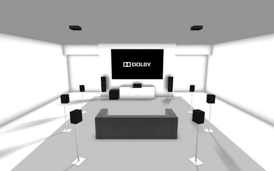

Introduction
Le Dolby Atmos est une technologie de reproduction sonore hybride qui repose sur le concept de format audio basé sur les objets (Object-Based Audio), marquant une rupture technique majeure avec les systèmes multicanaux traditionnels (comme le 5.1 ou le 7.1). Plutôt que d'attribuer un signal audio fixe à une enceinte précise (le canal gauche, le canal surround arrière, etc.), l'ingénieur du son travaille dans un espace tridimensionnel.
DB Atmos

Résumé
En conclusion, le Dolby Atmos marque une révolution anthropologique et technique dans l’histoire du son. En passant d’une logique de canaux figés à une logique d'objets tridimensionnels, il s'affranchit des contraintes matérielles. Ce n'est plus le matériel qui dicte comment le son doit être diffusé, c'est le format qui s'adapte intelligemment à chaque équipement. Conçu pour le cinéma, il redéfinit aujourd'hui notre façon de consommer la musique, le jeu vidéo et le streaming, faisant de l’immersion totale la nouvelle norme acoustique.